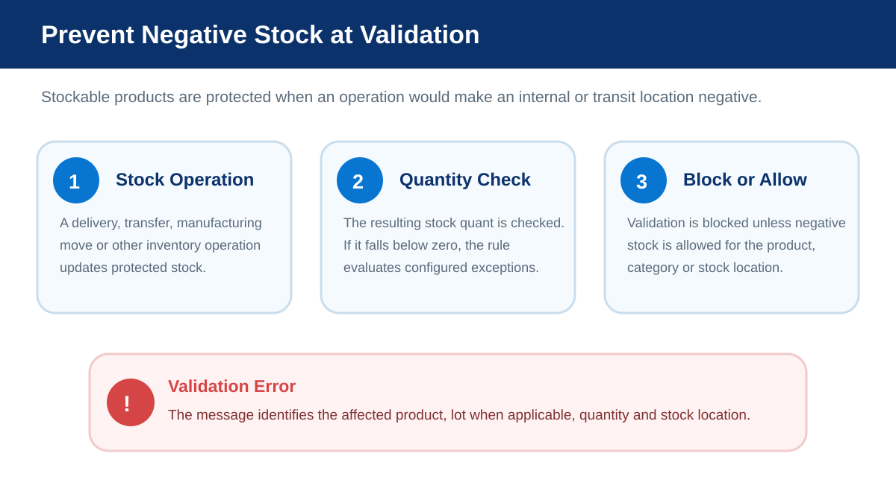
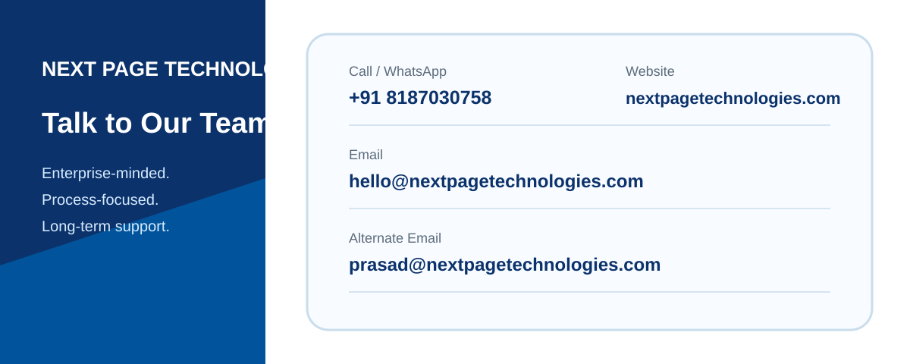

Stock No Negative blocks inventory operations that would make a stockable product negative in an internal or transit location. Controlled exceptions can be enabled for a specific product, product category, or stock location.
A stock quant constraint prevents protected stockable products from going below zero during validation.
Enable Allow Negative Stock for selected stockable products that are permitted to go negative.
Allow negative stock for products assigned directly to a selected product category.
Permit negative stock for selected internal or transit locations when the business process requires it.
When an inventory operation updates stock, the addon checks the resulting stock quant. If a stockable product would become negative in an internal or transit location and no exception is enabled, Odoo raises a clear validation error.

Negative stock is disallowed by default. Exceptions can be configured at product, product category, or stock location level without disabling the protection globally.
stockThis Odoo 18 distribution is based on the OCA stock_no_negative module, originally authored by Akretion and maintained through the Odoo Community Association ecosystem. The addon remains licensed under AGPL-3. Next Page Technologies provides this distribution, store presentation, implementation and support.
For implementation or support assistance, contact Next Page Technologies Pvt Ltd.
